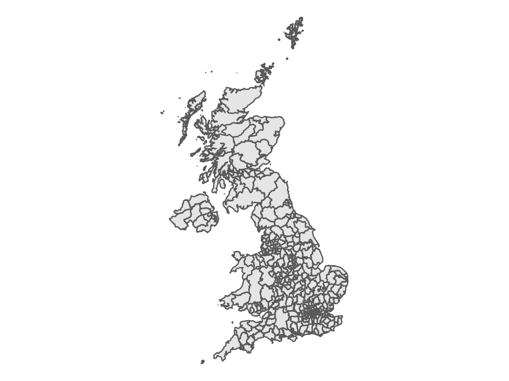
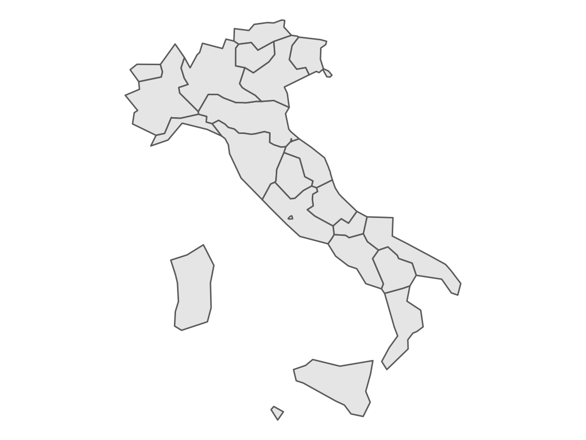
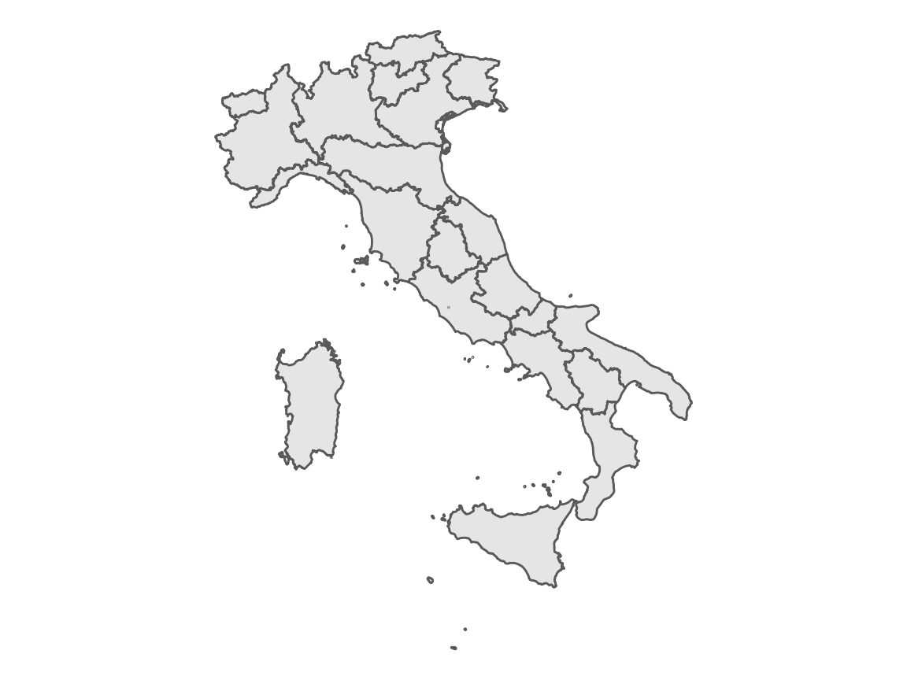
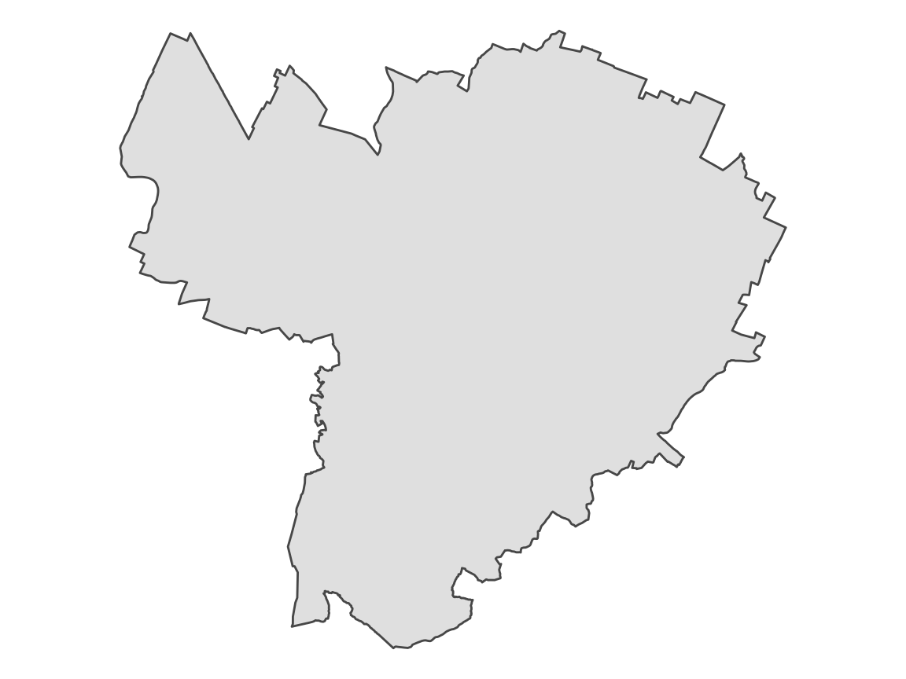
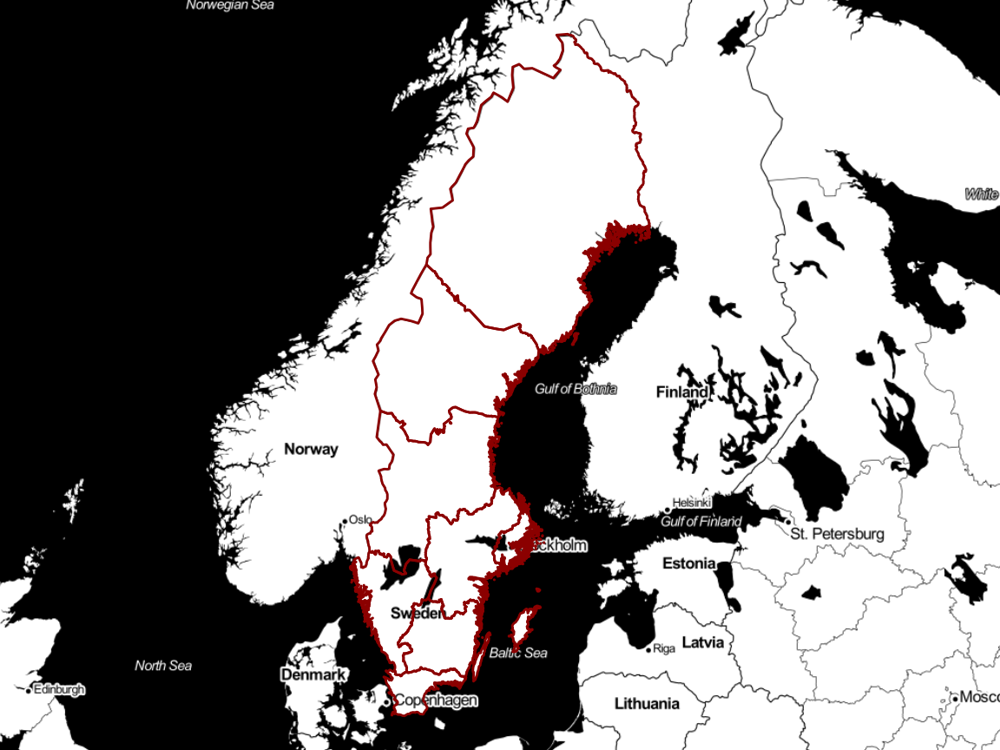
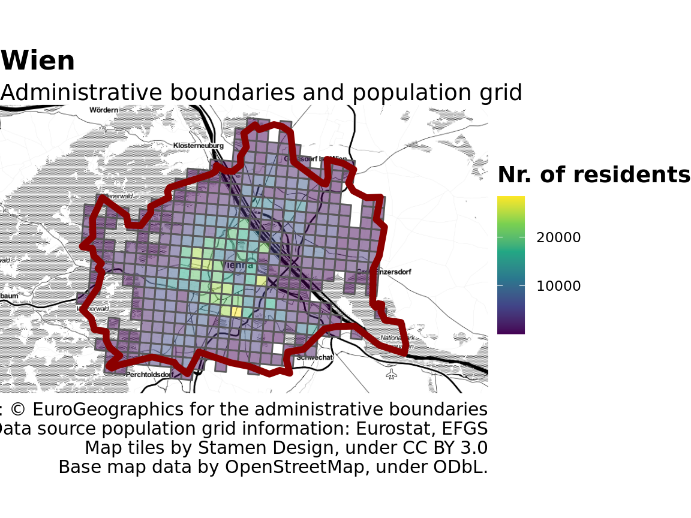
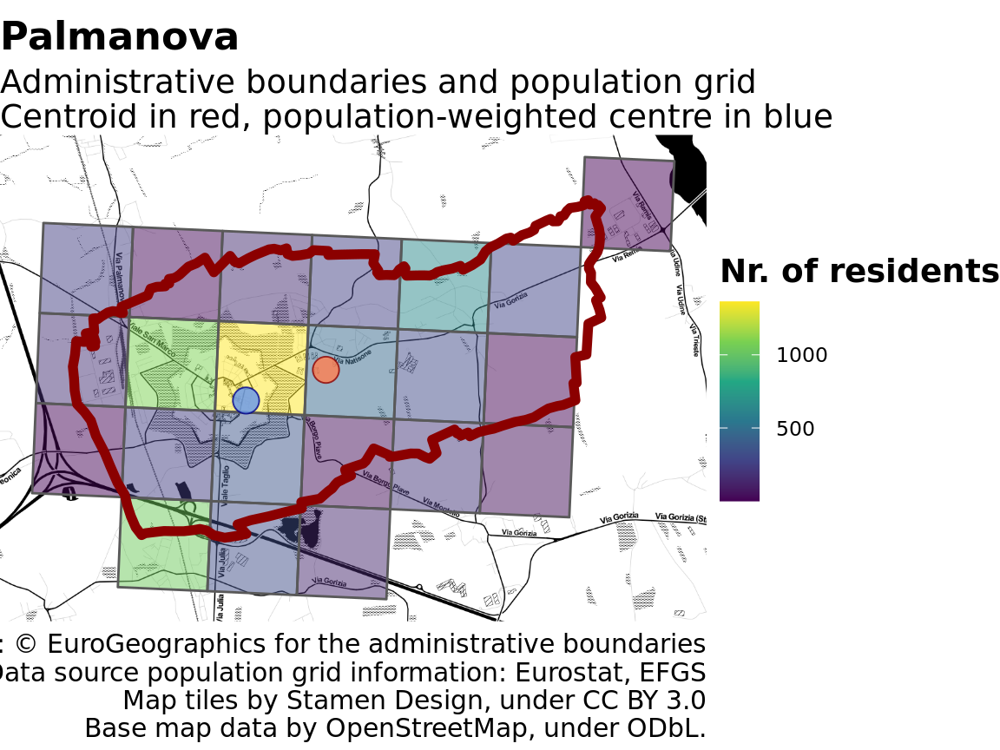

removing_the_boring.RmdThere are a number of small things that unneccesarily complicate using geographic data in Europe. The fact that even mapping data released by Eurostat are not distributed with a license that allows for their re-distribution, makes it more difficult to liberally pre-process and distribute such data as is common for example in the United States where they are usually released in the public domain.1 But beyond the licensing, there are still a number of small operations to do - find the data, download, uncompress, import in a useful format - and they all take time, and are boring, and demotivating.
So instead of spending time trying to make a map that is nice and useful, users (I have in mind data journalists, but this may relate to other users as well) waste a lot of time getting the data into R. They also end up having multiple copies of similar datasets, and end up sharing code that is not reproducible. How does it happen?
Let’s say I make a visualisation of electoral data. I use a geographic dataset on municipalities, and store it somewhere in my working folder. If I share the code, I often do not share also the geographic dataset due to size or licensing issues… I can then make a textual reference, or include a lot of boilerplate code that downloads the data if they are not locally available, uncompress, import, process them, etc. Even if I do all of the above, when the following week I will make another map for an article on climate change, I will end up redownloading the dataset, etc., ending up with multiple copies of the same geographic dataset. If I keep my folders synced, this also implies a lot of unnecessary files stored in the cloud, slowing the sync of the few lines of code that I’d actually like to be synced.
The package latlon2map deals with all of the above, easing the pain of the R user doing geocomputation. The package addresses the needs of data journalists and data enthusiasts, will be of particular use to non-experienced R programmers, but will likely be useful to users with all levels of experience. Please bear in mind that the package is functional, but is at an early stage of development, and is targeted mainly at Europe-based users.
The core idea of latlon2map is to make the process of caching geographic datasets as frictionless but also as transparent as possible.
The first thing to do is to set a folder where all data will be cached. This should normally by a folder that you do not sync, e.g.
library("dplyr", quietly = TRUE) #> #> Attaching package: 'dplyr' #> The following objects are masked from 'package:stats': #> #> filter, lag #> The following objects are masked from 'package:base': #> #> intersect, setdiff, setequal, union library("sf", quietly = TRUE) #> Linking to GEOS 3.7.1, GDAL 2.2.3, PROJ 4.9.3 library("latlon2map") ll_set_folder(path = "~/R") #> [1] "~/R"
All functions to get maps start with ll_get_ to facilitate auto-completion, and all of them output sf objects with crs 4326. As such, they can be directly used in graphs, without even the need to store them as separate objects.
If I want a map with local administrative units in the UK, for example, I can run the following code.
ggplot()+ geom_sf(data = ll_get_lau_eu() %>% filter(CNTR_CODE == "UK")) #> ℹ © EuroGeographics for the administrative boundaries

The first time that this is run it will download data from Eurostat’s website, unzip it, import as an sf object, and store it locally for quick retrieval. This means that if you run the same piece of code a second time, it will print the map almost instantly.
Here is for example the code for having NUTS2 regions in Italy.
ggplot()+ geom_sf(data = ll_get_nuts_eu(level = 2) %>% filter(CNTR_CODE == "IT")) #> ℹ © EuroGeographics for the administrative boundaries #> ℹ Source: https://ec.europa.eu/eurostat/web/gisco/geodata/reference-data/administrative-units-statistical-units/countries

Or with higher resolution:
ggplot()+ geom_sf(data = ll_get_nuts_eu(level = 2, resolution = 1) %>% filter(CNTR_CODE == "IT")) #> ℹ © EuroGeographics for the administrative boundaries #> ℹ Source: https://ec.europa.eu/eurostat/web/gisco/geodata/reference-data/administrative-units-statistical-units/countries

Check all the available options looking at the help files, e.g. ?ll_get_nuts_eu.
The package may include data from other statistical services; currently, it integrates geographic data published by Istat in Italy to have higher detail.
This for example shows the boundary of the city of Bologna, in Italy. The data for the specific geographic unit are also cached separately, so a second run of this code will give the result almost immediatelye (to clarify: if will not open the full dataset and filter for Bologna, but will open a pre-cached file with only the data for Bologna to increase speed and reduce memory requirements).
ggplot()+ geom_sf(data = ll_get_nuts_it(name = "Bologna", level = "lau", resolution = "high")) #> ℹ Source: https://www.istat.it/it/archivio/222527 #> ℹ Istat (CC-BY)

What is important is that this code can easily be shared and will work even if the geographics datasets are not previously present on the computer where the same code will be run. Even if you have many different projects using this data, only one copy will need to be stored on a given workstation.
Information on copyright is displayed on the console at each call of the function unless silent = TRUE is enabled.
The original shapefiles and the accompanying documentation remains stored under the folder ll_data.
Another small nuisance is related to including in the same post maps or areas with different proportions.
For example, Portugal and the Netherlands have different shapes, but I’d like to have all maps in my my post with the same height/width ratio. This is slightly complicated by the fact that scales are in degrees, so it take some effort to get get them right. The function ll_bbox takes care of this, so that instead of some maps that are very wide, and some that are very tall, e.g.
remotes::install_github("paleolimbot/ggspatial", upgrade = "never", quiet = TRUE)
library("ggspatial")
sf_reference <- ll_get_nuts_eu(level = 2, resolution = 1) %>% filter(CNTR_CODE == "SE")
#> ℹ © EuroGeographics for the administrative boundaries
#> ℹ Source: https://ec.europa.eu/eurostat/web/gisco/geodata/reference-data/administrative-units-statistical-units/countries
ggplot() +
annotation_map_tile(type = "stamenbw", zoomin = 0, cachedir = fs::path(ll_set_folder(), "ll_data")) +
geom_sf(data = sf_reference, colour = "darkred", fill = NA)
#> Zoom: 5
#> Fetching 12 missing tiles
#>
|
| | 0%
|
|====== | 8%
|
|============ | 17%
|
|================== | 25%
|
|======================= | 33%
|
|============================= | 42%
|
|=================================== | 50%
|
|========================================= | 58%
|
|=============================================== | 67%
|
|==================================================== | 75%
|
|========================================================== | 83%
|
|================================================================ | 92%
|
|======================================================================| 100%
#> ...complete!…we can have this all of them with the same proportion.
ggplot() +
annotation_map_tile(type = "stamenbw", zoomin = 0, cachedir = fs::path(ll_set_folder(), "ll_data")) +
geom_sf(data = sf::st_as_sfc(ll_bbox(sf = sf_reference,ratio = "4:3")), fill = NA, color = NA) +
geom_sf(data = sf_reference, colour = "darkred", fill = NA)
#> Zoom: 5
#> Fetching 8 missing tiles
#>
|
| | 0%
|
|========= | 12%
|
|================== | 25%
|
|========================== | 38%
|
|=================================== | 50%
|
|============================================ | 62%
|
|==================================================== | 75%
|
|============================================================= | 88%
|
|======================================================================| 100%
#> ...complete!
There are more complex geographic data than simple boundary lines. Eurostat for example published a population grid, pointing at how many people lives in each square km of the continent. Such data can be useful for a number of analyses, but they tend to come in big files. Again, lonlat2map caches the result, including pre-processed data if a consistent name is provided.
name <- "Wien"
sf_location <- ll_get_lau_eu(name = name)
#> ℹ © EuroGeographics for the administrative boundaries
desired_bbox <- st_as_sfc(ll_bbox(sf = sf_location, ratio = "16:9"))
lau_grid_name <- stringr::str_c(name, "_lau_high-st_intersects")
sf_location_grid <- ll_get_population_grid(match_sf = sf_location,
match_name = lau_grid_name,
match_country = "AT",
join = sf::st_intersects,
silent = TRUE) %>%
dplyr::rename(`Nr. of residents` = TOT_P)
#> Parsed with column specification:
#> cols(
#> TOT_P = col_double(),
#> GRD_ID = col_character(),
#> CNTR_CODE = col_character(),
#> METHD_CL = col_character(),
#> YEAR = col_double(),
#> DATA_SRC = col_character(),
#> TOT_P_CON_DT = col_character()
#> )
ggplot() +
annotation_map_tile(type = "stamenbw", zoomin = 0, cachedir = fs::path(ll_set_folder(), "ll_data")) +
geom_sf(data = desired_bbox, fill = NA, color = NA) +
geom_sf(data = sf_location_grid,
mapping = aes(fill = `Nr. of residents`), alpha = 0.5) +
scale_fill_viridis_c() +
geom_sf(data = sf_location,
colour = "darkred",
size = 2,
fill = NA,
alpha = 0.8) +
labs(title = paste(sf_location$LAU_LABEL),
subtitle = "Administrative boundaries and population grid",
caption = "Source: © EuroGeographics for the administrative boundaries
Data source population grid information: Eurostat, EFGS
Map tiles by Stamen Design, under CC BY 3.0
Base map data by OpenStreetMap, under ODbL.")
#> Zoom: 11
#> Fetching 12 missing tiles
#>
|
| | 0%
|
|====== | 8%
|
|============ | 17%
|
|================== | 25%
|
|======================= | 33%
|
|============================= | 42%
|
|=================================== | 50%
|
|========================================= | 58%
|
|=============================================== | 67%
|
|==================================================== | 75%
|
|========================================================== | 83%
|
|================================================================ | 92%
|
|======================================================================| 100%
#> ...complete!
lonlat2map includes some convenience functions to deal with normally tedious processes, e.g. finding the population-weighted center of an area.
name = "Palmanova"
sf_location <- ll_get_nuts_it(name = name, level = "lau", resolution = "high", silent = TRUE)
centroid <- sf::st_centroid(sf_location %>%
sf::st_transform(crs = 3857)) %>%
sf::st_transform(crs = 4326)
#> Warning in st_centroid.sf(sf_location %>% sf::st_transform(crs = 3857)):
#> st_centroid assumes attributes are constant over geometries of x
desired_bbox <- st_as_sfc(ll_bbox(sf = sf_location, ratio = "4:3"))
lau_grid_name_temp <- stringr::str_c(name, "_lau_high-st_intersects")
sf_location_grid <- ll_get_population_grid(match_sf = sf_location,
match_name = lau_grid_name_temp,
match_country = "IT",
join = sf::st_intersects,
silent = TRUE)
pop_centroid <- ll_find_pop_centre(sf_location = sf_location,
sf_population_grid = sf_location_grid,
power = 2)
#> Warning in st_centroid.sf(.): st_centroid assumes attributes are constant over
#> geometries of x
ggplot() +
annotation_map_tile(type = "stamenbw", zoomin = 0, cachedir = fs::path(ll_set_folder(), "ll_data")) +
geom_sf(data = desired_bbox, fill = NA, color = NA) +
geom_sf(data = sf_location_grid %>% rename(`Nr. of residents` = TOT_P),
mapping = aes(fill = `Nr. of residents`), alpha = 0.5) +
scale_fill_viridis_c() +
geom_sf(data = sf_location,
colour = "darkred",
size = 2,
fill = NA,
alpha = 0.8) +
geom_sf(data = centroid,
colour = "darkred",
fill = "coral",
size = 5,
shape = 21,
alpha = 0.8) +
geom_sf(data = pop_centroid,
colour = "blue4",
fill = "cornflowerblue",
size = 5,
shape = 21,
alpha = 0.8) +
labs(title = paste(sf_location$COMUNE),
subtitle = "Administrative boundaries and population grid
Centroid in red, population-weighted centre in blue",
caption = "Source: © EuroGeographics for the administrative boundaries
Data source population grid information: Eurostat, EFGS
Map tiles by Stamen Design, under CC BY 3.0
Base map data by OpenStreetMap, under ODbL.")
#> Zoom: 14
#> Fetching 20 missing tiles
#>
|
| | 0%
|
|==== | 5%
|
|======= | 10%
|
|========== | 15%
|
|============== | 20%
|
|================== | 25%
|
|===================== | 30%
|
|======================== | 35%
|
|============================ | 40%
|
|================================ | 45%
|
|=================================== | 50%
|
|====================================== | 55%
|
|========================================== | 60%
|
|============================================== | 65%
|
|================================================= | 70%
|
|==================================================== | 75%
|
|======================================================== | 80%
|
|============================================================ | 85%
|
|=============================================================== | 90%
|
|================================================================== | 95%
|
|======================================================================| 100%
#> ...complete!
The function is flexible, and can be used with more granular population data such as those distributed by Facebook, which can be loaded with the function ll_get_population_grid_hr().
lau_grid_name_temp <- stringr::str_c(name, "_lau_hr-st_intersects") sf_location_grid_hr <- ll_get_population_grid_hr(geo = "IT", match_sf = sf_location, match_name = lau_grid_name_temp, join = sf::st_intersects, silent = TRUE) pop_centroid_hr <- ll_find_pop_centre(sf_location = sf_location, sf_population_grid = sf_location_grid_hr, power = 5) ggplot() + annotation_map_tile(type = "stamenbw", zoomin = 0, cachedir = fs::path(ll_set_folder(), "ll_data")) + geom_sf(data = desired_bbox, fill = NA, color = NA) + geom_sf(data = sf_location_grid_hr %>% rename(`Nr. of residents` = Population), mapping = aes(colour = `Nr. of residents`), alpha = 0.5) + scale_colour_viridis_c() + geom_sf(data = sf_location, colour = "darkred", size = 2, fill = NA, alpha = 0.8) + geom_sf(data = centroid, colour = "darkred", fill = "coral", size = 5, shape = 21, alpha = 0.8) + geom_sf(data = pop_centroid_hr, colour = "blue4", fill = "cornflowerblue", size = 5, shape = 21, alpha = 0.8) + labs(title = paste(sf_location$COMUNE), subtitle = "Administrative boundaries and population grid Centroid in red, population-weighted centre in blue"ulation grid Centroid in red, population-weighted centre in blue", caption = "Source: © EuroGeographics for the administrative boundaries Facebook High Resolution Population Density Maps (CC-BY) Map tiles by Stamen Design, under CC BY 3.0 Base map data by OpenStreetMap, under ODbL." administrative boundaries Facebook High Resolution Population Density Maps (CC-BY) Map tiles by Stamen Design, under CC BY 3.0 Base map data by OpenStreetMap, under ODbL.")
This package was started while writing a blog post, and not everything may work smoothly at this stage. Feel free to get in touch with the author or file an issue on GitHub.
Future versions of lonlat2map will have integrated support for more data sources, as well as additional functions to facilitate common use cases.
The licensing is particularly problematic since it does not allow to use the data “for commercial purposes”: does this mean that data journalists can or cannot use these data? If somebody in relevant EU institutions reads this, I beg you, please, please, release geographic data in the public domain.↩︎